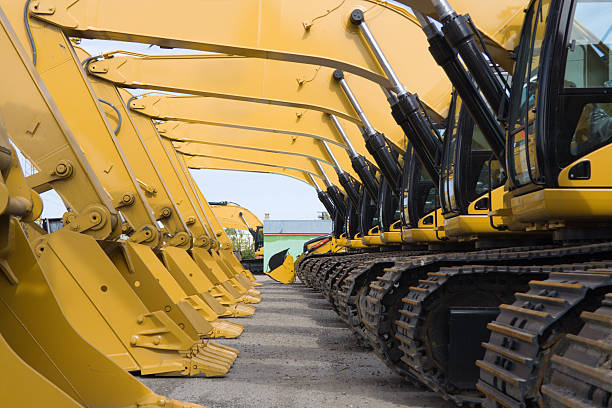

Rental

Your Equipment, Treated Like Our Own
Whether it is owned or rented, equipment on your worksite
should be in top operating condition. Our Customer Equipment
Solutions team specializes in equipment repair and service
in the field and onsite, so you can protect your investment;
safeguard your employees; and meet ANSI, OSHA, and CSA requirements.
We offer tiered plans for equipment solutions From on-demand service for unexpected repairs to a turnkey fleet management solution, Tolu Heavy Equipment Rentals' Customer Equipment Solutions team has an option that can be catered to your unique needs.
Inspections and On-Demand Service and Repairs
Managed Maintenance
On-Site Programs
Tolu Heavy Rental delivers prompt repair service. We can routinely inspect your equipment and supply parts. Our team can fully manage your fleet so you can focus on what matters: Getting the job done.